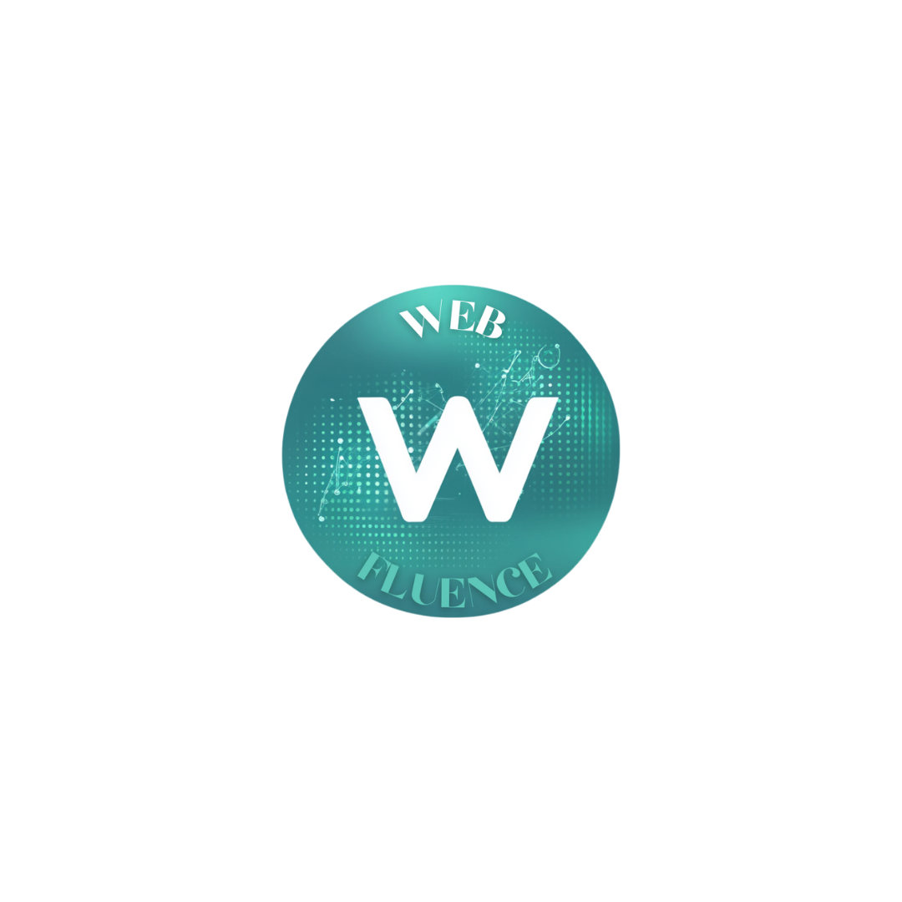
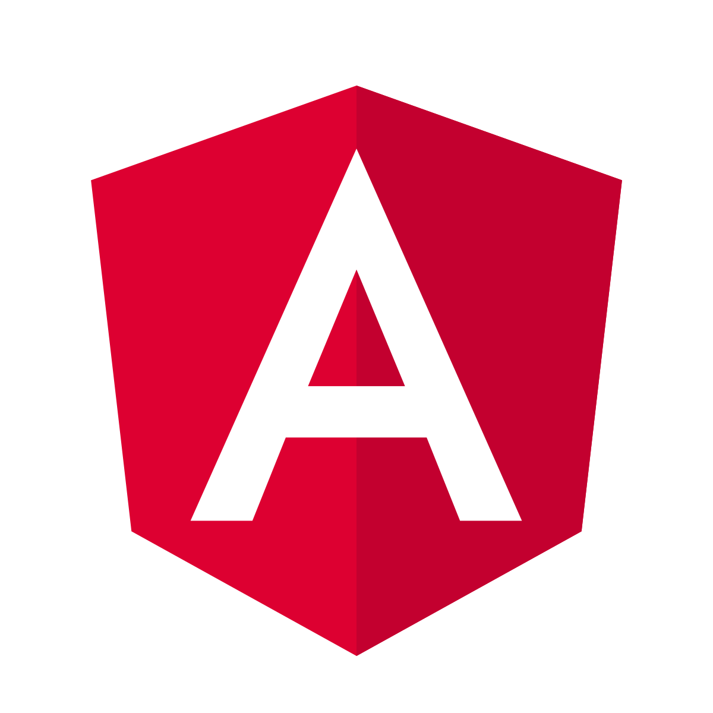

Bienvenue dans MON portfolio !
Qui suis-je ?
Etudiant en deuxième année de BTS SIO option SLAM, passionné par le développement web et la création de solutions numériques innovantes. J'envisage de continuer mes études jusqu'au BAC+5 et devenir développeur Full-Stack.
Accéder à mon CV ➜Série Sciences et Technologies du Management et de la Gestion. Lycée Sainte Marie à créteil.
Repar'up
- 📍 Bagnolet
- 👥 Petite équipe (moins de 10)
- Domaine : Réparation d'ordinateurs et d'équipements périphériques
- Forme Juridique : SA
- Mon rôle : Refonte entière du site et développement d'un espace utilisateur
- Radié le 30/08/2024

Webfluence
- 📍 Tremblay-en-France
- 👥 Indépendante
- Domaine : Autrice de livres numérique (ebooks)
- Forme Juridique : Artiste-Auteur
- Mon rôle : Développeur d'un site de vente de livres numérique
Au fil de mes deux années de formation en BTS SIO SLAM, ainsi que lors de mes stages, j’ai acquis un ensemble de compétences techniques, que j'ai pu consolidé de mon côté, liées au développement d’applications et de sites web.
Ces compétences couvrent à la fois le développement front-end (interface utilisateur) et le développement back-end (traitement des données et logique applicative), me permettant de concevoir des solutions complètes et fonctionnelles.



E5 Support et mise à disposition de services informatiques
Accéder à ma Veille Technologique
E6 Conception et développement d'applications
Accéder à mes projets